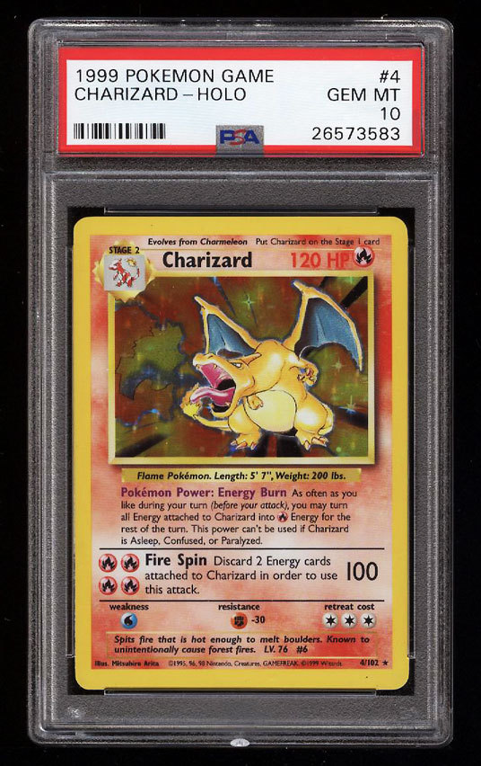
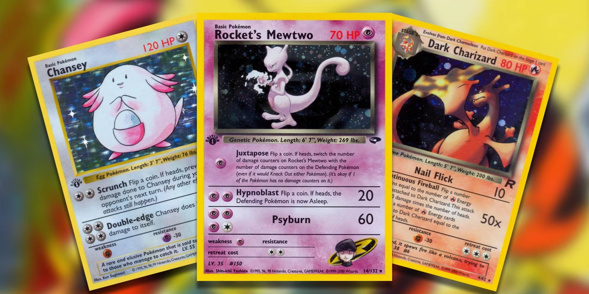

The Origins of Pokemon TCG
Pokémon sets represent the foundation of the hobby. Released during the late 1990s and early 2000s, these cards introduced many of the characters and artwork styles that helped define the franchise. Right on the heels of the extrememly popular Pokemon Red and Blue video games, the cards began to spread quickly with kids wanting to be just like the trainers they emulated on their GameBoy.

Popular vintage sets include:
-Base Set: The first set released, featuring iconic Pokémon like the Base Set 1st Edition Holo Charizard, Venusaur & Blastoise Cards
-Jungle: Featuring the 1st Edition Holo Snorlax
-Fossil: Featuring the 1st Edition Holo Dragonite and Gengar
-Team Rocket: Featuring the 1st Edition Holo Dark Dragonite, Dark Charizard & Dark Gyarados Cards
-Gym Heroes: Featuring a slew of different Kanto gym themed Holo cards
-Neo Genesis: Featuring cards such as the 1st Edition Holo Lugia
Early sets like Base Set, Jungle, and Fossil are highly sought after by collectors due to their nostalgic value and the introduction of iconic Pokémon. The holo cards, usually the first numbers of a set, are considered to be the crown jewels of each older set. They have a slightly higher rarity, and the ones that are of the most popular pokemon will sell for the highest amount. These cards often feature unique artwork and were produced in limited quantities compared to modern releases.
Why Vintage Cards Matter
Many collectors are drawn to older cards because of their historical significance and nostalgia. For long-time fans, these cards often represent childhood memories and early experiences with Pokémon.
Vintage cards can also be challenging to obtain due to limited supply and increasing demand among collectors. Value for certain cards such as the Base Set Charizard have skyrocketed, with higher graded cards selling well into the six figure range.
Building a Vintage Collection

Collectors interested in older sets often focus on:
- Completing entire sets
- Collecting specific Pokémon
- Acquiring first edition cards
- Preserving sealed products
Each approach offers unique challenges and rewards.
Whether you are looking to complete a vintage set or acquire specific cards, there are many resources available to help you navigate the world of older Pokémon cards. Online marketplaces, local card shops, and trade shows can all be great places to find vintage cards and connect with other collectors.